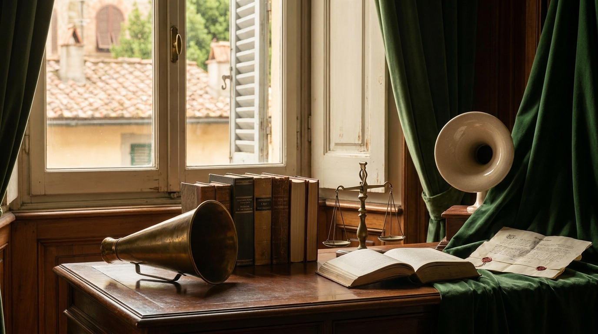

Rumori dei vicini: quando scatta il diritto al risarcimento
La Corte di Cassazione ribadisce un principio destinato a incidere sulla vita condominiale: i rumori dei vicini danno diritto al risarcimento solo quando superano la soglia della normale tollerabilità fissata dall'art. 844 del Codice civile. Un confine sottile, che chi convive in condominio ha tutto l'interesse a comprendere prima di agire in giudizio.

Il principio affermato dalla Cassazione
Non ogni rumore proveniente dall'appartamento accanto legittima una richiesta di risarcimento. La Corte di Cassazione ha riaffermato che il diritto a ottenere un ristoro economico (e a far cessare il disturbo) sorge solo quando le immissioni sonore oltrepassano la normale tollerabilità.
È una distinzione decisiva. La convivenza in condominio comporta per sua natura un grado di tolleranza reciproca: passi, voci, elettrodomestici, lavori occasionali fanno parte della normalità abitativa. Il diritto interviene quando il disturbo diventa sistematico e di intensità tale da incidere concretamente sulla qualità della vita.
Inquadramento normativo
Il riferimento è l'art. 844 del Codice civile, dedicato alle immissioni. La norma stabilisce che il proprietario di un fondo non può impedire le immissioni di fumo, calore, rumori e simili provenienti dal fondo del vicino "se non superano la normale tollerabilità, avuto anche riguardo alla condizione dei luoghi".
La formula "condizione dei luoghi" è centrale: la tollerabilità non è un valore assoluto. Un rumore accettabile in una zona industriale o in un centro urbano densamente abitato può risultare intollerabile in una zona residenziale silenziosa. Il giudice valuta caso per caso, contemperando le esigenze della produzione (o dell'uso ordinario dell'immobile) con le ragioni della proprietà.
La giurisprudenza ha affiancato all'art. 844 c.c. la tutela della salute e della serenità domestica. Quando le immissioni ledono il diritto al riposo e alla vita privata, il danno risarcibile può estendersi oltre il profilo strettamente patrimoniale, comprendendo il pregiudizio non patrimoniale, purché provato.
Come si misura la "normale tollerabilità"
Il criterio adottato dai tribunali è quello cosiddetto comparativo: si confronta il livello del rumore con il rumore di fondo della zona. La soglia di tollerabilità viene generalmente individuata in un superamento del rumore di fondo di alcuni decibel (un parametro tecnico spesso accertato tramite consulenza tecnica).
È bene chiarire un punto: il superamento dei limiti fissati dalle normative pubbliche sull'inquinamento acustico non coincide automaticamente con l'intollerabilità ai fini civili. Quei limiti tutelano la collettività; l'art. 844 c.c. tutela il singolo nel rapporto di vicinato. Possono esserci immissioni intollerabili tra privati anche entro i limiti amministrativi, e viceversa.
Implicazioni pratiche per chi vive in condominio
Per il condomino disturbato, la conseguenza è netta: la sola percezione soggettiva del fastidio non basta. Occorre dimostrare che il rumore eccede la normale tollerabilità nella specifica situazione abitativa.
La prova è quindi il fulcro della controversia. Senza un accertamento tecnico oggettivo, l'azione rischia di non superare il vaglio del giudice. Allo stesso tempo, chi viene accusato di provocare immissioni eccessive ha interesse a documentare la natura ordinaria e occasionale delle proprie attività.
Prima di rivolgersi al giudice, è spesso opportuno tentare la via stragiudiziale: una segnalazione all'amministratore, il richiamo al regolamento condominiale (che può fissare orari e limiti d'uso) o la mediazione possono risolvere il conflitto senza i costi e i tempi di una causa.
Cosa fare in concreto
- Documentate il disturbo: annotate giorni, orari, durata e frequenza dei rumori, raccogliendo eventuali testimonianze di altri condomini.
- Verificate il regolamento condominiale: controllate se prevede limiti d'uso, orari di silenzio o divieti specifici che il vicino sta violando.
- Richiedete una perizia fonometrica: solo una misurazione tecnica del superamento del rumore di fondo offre una prova spendibile in giudizio.
- Tentate prima la via bonaria: una diffida formale o la mediazione possono evitare il contenzioso e accelerare la cessazione del disturbo.
- Valutate l'azione con un legale: prima di agire, consigliamo di far esaminare la solidità delle prove raccolte e l'effettiva sussistenza del danno risarcibile.
Conclusione
Il risarcimento per i rumori dei vicini è uno strumento concreto, ma condizionato a un presupposto rigoroso: il superamento della normale tollerabilità. La preparazione probatoria, più ancora della fondatezza della pretesa, decide spesso l'esito della controversia.
---
*Contributo informativo a cura di Tamburro & Partners - Avv. Giuseppe Tamburro. Non costituisce parere legale.*
Ogni condominio ha una storia a sé.
Se gestisci un'amministrazione e vuoi un confronto su una specifica questione condominiale, scrivi allo studio. Ti rispondiamo entro un giorno lavorativo.